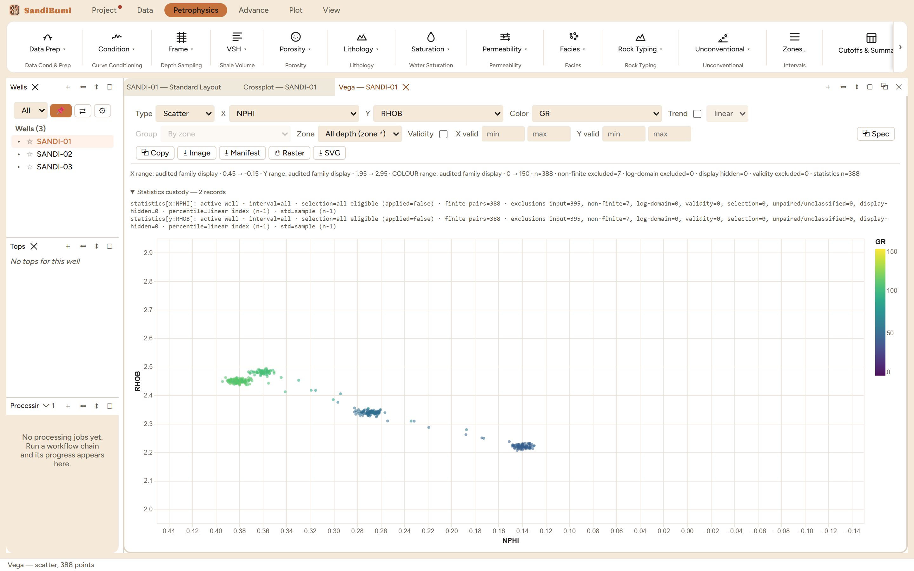

The Vega chart is the free-form plot: five chart types over any pair of
curves, a trend overlay, and, for the case none of the fixed panels cover, a
hand-editable grammar (Vega-Lite) behind a Spec button. Reach for it
when the question does not fit the histogram/crossplot/Pickett shapes: a
density comparison, a raincloud of a property by zone, or a one-off chart a
reviewer asked for.
The pane

Scatter of NPHI against RHOB coloured by GR, 388 points. The
axis windows come from the audited family displays (NPHI drawn reversed,
0.45 to −0.15), and the statistics custody block accounts for both
axes.
Type: Scatter, Line, Histogram, Density, Raincloud. The toolbar
dims what does not apply, a histogram has no Y, only a scatter takes
Colour and Trend, only a raincloud takes Group.
Trend (scatter only) fits one of five models: linear, log, exp,
pow, quad.
Validity bounds per axis restrict the population and the
statistics, the same contract as the fixed plots.
Scatter and line support brushing: a plain drag selects an interval and
publishes it as the shared depth selection other panels can read.
Step by step
Open Plot ▸ New Vega Chart, pick the type and curves; the chart
draws with the governed axis ranges and the audit line under the
toolbar.
For a scatter, add Colour and tick Trend with a model when a fitted
line is wanted; the fit population is stated, never implied.
For distribution questions, switch the type: Density overlays smoothed
distributions, Raincloud groups a curve by zone or by a class curve.
Spec opens the grammar of the current chart; edits apply as a
custom spec with the current rows injected as its data.
Reading the result
The audit line reconciles the population exactly as the fixed panels do
(here: n=388 with non-finite excluded=7 out of 395 input samples), and the
statistics custody block records the basis per axis with the same percentile
and standard-deviation conventions. The one deliberate exception: with a
hand-edited spec active, the panel states that governed display clipping is
unavailable and refuses persistence and export, because a chart whose
axes the grammar controls can no longer carry the audited-range guarantee the
exports promise.
QC and pitfalls
A custom spec trades governance for freedom. Use it for
exploration; anything that ships in a deliverable should come from a
governed chart type so its ranges and exclusions are audited.
The brush is shared state. A selection made here dims points in
other panels and vice versa; clear it before reading a plot as "all
data".
Density smooths. The density type applies a kernel bandwidth to
the data; read the histogram beside it before arguing from a shoulder
that smoothing can create or erase.